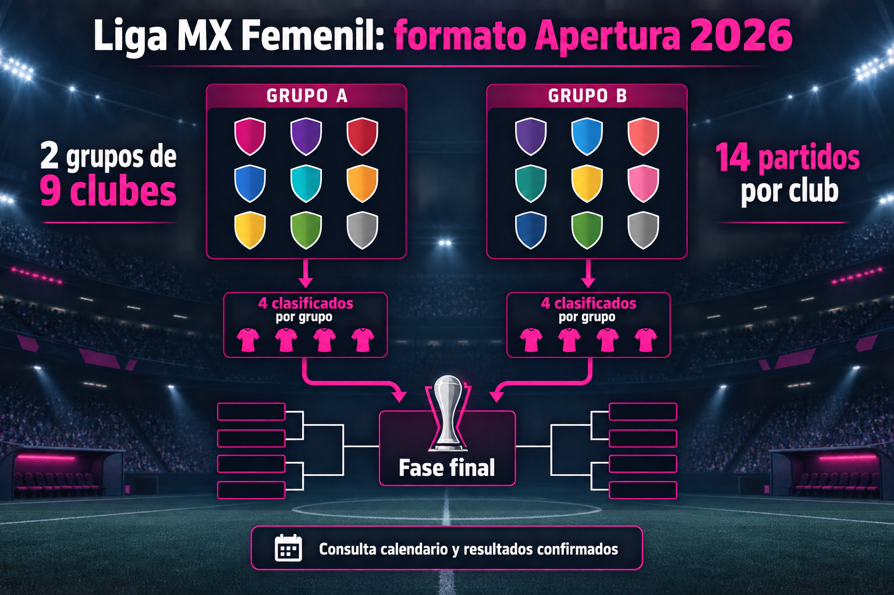

¿Qué es la Liga MX Femenil?
La Liga MX Femenil es la competencia profesional de clubes femeninos en México. Reúne proyectos deportivos de alcance nacional y cuenta con calendario, posiciones, resultados y fase final propios; sus datos no deben mezclarse con los de la Liga MX varonil.
Cómo se disputa el Apertura 2026
La fase regular se divide en dos grupos de nueve clubes. Cada equipo tiene 14 partidos programados: ocho dentro de su sector y seis intergrupales. Los cuatro mejores de cada grupo avanzan a la fase final.
Este sistema sustituye la tabla única de algunas temporadas previas. Por eso, una posición sólo se interpreta correctamente al comparar al club con los equipos de su grupo y considerar los partidos ya disputados.
De la fase regular a la final
Los ocho clasificados disputan eliminación directa. Consulta los formatos de cuartos de final, semifinales y las campeonas recientes para entender cada ronda.
Equipos, proyectos y rivalidades
Los 18 representativos femeniles pertenecen a clubes con aficiones y rivalidades nacionales o regionales. El seguimiento de cada plantilla debe partir de su calendario propio: por ejemplo, cuándo juega América Femenil y cuándo juega Chivas Femenil.